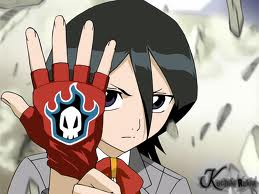
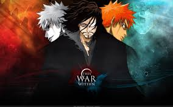
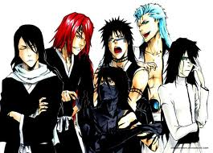
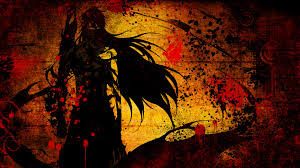
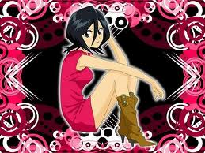
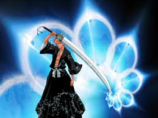
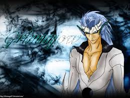
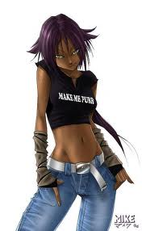

Бліч

«Bleach» — популярна японська манґа, авторства манґаки Кубо Тайто. Вперше з'явилась в номері журналуShonen Jump за серпень 2001 року. Перший том вийшов 5 січня 2002 року. На сьогодні нараховує 60 танкобон і далі виходить.
На даний час в Японії продано понад 50 млн копій манґи. Автор оригінальної історії Кубо Тайто, в 2005 році за цей твір отримав премію видавництва Shogakukan.
На основі манґи анімаційною студією Studio Pierrot створено аніме-серіал. Прем'єра серіалу відбулася на телеканалі TV Tokyo 5 жовтня 2004 року. Остання, 366 серія, вийшла на цьому ж каналі 27 березня 2012 року.
Окрім аніме, зняті два OVA та чотири анімаційні фільми, також з'явилася велика кількість відеоігор, мюзикл та колекційна карткова гра.
Видавництво Shueisha займається новелізацією манґи: у 2004 та 2006 роках було опубліковано дві книги, написані спільно Кубо Тайтом та Макотою Мацубарою.
Центральний персонаж Бліча — п'ятнадцятирічний школяр Куросакі Ітіґо, який випадково отримує надприродні сили сініґамі — «богів смерті». Наділений їх здібностями, Ітіґо вимушений битися із злими духами, захищати людей та відправляти душі померлих в потойбічний світ.
Назва

Дослівно Бліч (англ. Bleach) перекладається як «вибілювання» або «білизна». Точно невідомо, чому Кубо Тайто вибрав таку назву, але є кілька припущень.
За однією з версій, коли японці вибілюють волосся, колір іноді виходить не білим, а помаранчевим, як у головного героя Куросакі Ітіґо. В манзі є сцена, коли хлопець із знебарвленим волоссям звинувачує Ітіґо, що той «вкрав» його зачіску (хоча колір волосся Ітіґо насправді натуральний). Можливо, однокласники вважають, що Ітіґо знебарвлює волосся.
За іншою версією, «білизна» — натяк на духів, які в примарній формі мають білий колір, або ж на сініґамі, які очищають, тобто «вибілюють» душі, перед відправленням їх в інший світ. Крім того, одяг Рукії перетворився на білий, коли Ітіґо відняв її духовну енергію.
Ще одна популярна версія пов'язана з тим, що Кубо Тайто любить музику групи Nirvana та назвав манґу на честь однойменного альбому «Bleach». В інтерв'ю Кубо Тайт дійсно сказав, що є фанатом цієї групи, проте офіційно дана теорія не підтверджена.
Історія створення

Кубо Тайто в інтерв'ю розповідав, що ідея манґи зародилася у нього тоді, коли виникло бажання намалювати сініґамі в кімоно. Це послужило основою для дизайну Рукії Кутікі. Ідея була запропонована редакторам журналу Shonen Jump незабаром після припинення випуску Zombie Powder, попередньої манґи Куби. Він планував опублікувати Bleach максимум за п'ять років. В планах автора не було складної ієрархичної структури суспільства сініґамі.
Назви в Bleach Кубо запозичував з іноземних мов, музики, архітектури та кінематографу. Імена багатьох мечів та заклинань походять з стародавньої японської літератури, Порожні мають імена з іспанської мови, а назви предметів раси Куінсі взяті з німецької. Кубо особливо захоплений іспанською, яка здається йому «чарівною» та «соковитою».
Авторська любов до надприродного та монстрів прийшла після прочитання манґи Мідзукі Сіґеру Ge Ge Ge no Kitaro, а велика кількість битв та інтерес до зброї — від манґи Saint Seiya Курумади Масамі, яку Кубо любив в дитинстві. Він також згадував, що зацікавився міфами та загробним життям завдяки Saint Seiya, яка заснована на старогрецькій міфології. Атрибути бойовику та особливості сюжетного оповідання взяті зі світу кіно, хоча автор не назвав конкретних фільмів, які надихали його на малювання сцен битв. Автор пояснював, що малює сцени битв, слухаючи рок-музику: таким чином йому легше придумувати позиції персонажів. Він також прагне малювати реалістичні поранення, аби читачі самі відчули біль, який відчувають герої .
Творчий процес автора зосереджується на створенні дизайну персонажів. Коли Кубо роздумує над сюжетом або відчуває труднощі з новим матеріалом, він починає зі створення персонажів та перечитує попередні томи манґи. Він згадував, що любить придумувати несподіваних персонажів, чия зовнішність дає помилкове уявлення про їх характер, оскільки його «приваблюють люди з суперечливим характером».
Найважче в роботі над манґою — це необхідність укладатися в терміни видавців — щотижня малювати 19 сторінок. Кубо допомагає три асистенти, проте, всіх персонажів та ключові сцени йому доводиться малювати одному. Навіть якщо я хочу більше уваги приділити якійсь конкретній сцені, яку я вважаю важливою, — розповідав автор, — я не маю такої можливості через брак часу.
Світ

Всесвіт Bleach розділений на дві частини — Світ людей та Загробне життя. В Загробному житті душі людей знаходяться чи в раю, який називається Світ Душ, чи в пеклі. Якщо душа помирає в Світi Душ, то вона народжується у світі людей.
- Світ людей — дуже схожий на сучасну Японію. Сюжет концентрується в основному території західного Токіо, яка в творі називається Каракурою. В цьому світі Ітіґо ходить в школу та веде майже нормальне життя
- Світ Душ або Soul Society — світ сініґамі і те місце, куди звичайні люди відправляються після смерті.
Спочатку Кутікі Рукія описує Світ душ як якусь подібність раю, де всі живуть щасливо і ніхто не голодує. Оскільки Рукіа померла в ранньому дитинстві і живе в Світі душ дуже давно, вона, можливо, не має чіткого уявлення про земний світ, тому не здатна на адекватну оцінку. Насправді, в Світі душ теж є свої проблеми, наприклад, неблагополучні райони.
У центрі Світу душ розташовано величезне місто сініґамі Сейрейтей, «Двір чистих душ». Сейретей обгороджений стінами і непогано захищений, але звичайні душі живуть не в ньому, а в околицях, які називаються Руконґай, «Місто блукаючих духів». У свою чергу, Руконґай також складається з великої кількості районів, які сильно відрізняються один від одного. У аніме і манзі нічого не говориться про те, чи патрулюють сініґамі вулиці Руконґаю. Якщо вони і виходять з міста, то тільки за своїми обов'язками, тому найближчій до Сейрейтею район найблагополучніший, там панує закон та порядок, але чим далі від Сейрейтею, тим більше злочинності та бідності.
Тут же знаходиться Академія сініґамі, де протягом шести років студенти осягають майстерність володіння мечем і вчаться управляти духовною енергією. Академія була створена Ямамото Сіґекуні приблизно за 2000 років до початку сюжетної лінії Bleach.
Мешканці Світу Душ не безсмертні, хоча сініґамі доживають деколи до 2000 років. Рани, отримані в бою, цілком можуть виявитися фатальними, хоча сініґамі здатні витримувати дуже важкі битви та видужувати в таких обставинах, в яких земна людина давно б померла. Душа, яка вмирає в Світі Душ, втрачає всі свої спогади, перероджується і повертається на Землю як проста людина.
Сініґамі переміщаються між світами через «Сенкаймон» (за допомогою чорного метелика, який називають «метеликом пекла»).
- Уеко Мундо — це пустинна область між світом людей і Світом Душ. Сама назва походить від ісп. Mundo Hueco — «порожній світ» або «світ порожніх». Тут живуть порожні в той час, коли не полюють за душами на Землі. Уеко Мундо заповнений сіруватим піском, схожим на кристали солі, іноді зустрічаються кварцові дерева. Потрапити сюди можна тільки одним шляхом — розірвавши просторову тканину.
Раси

- Люди — живуть в реальному світі і схожі на сучасних японців. Більшість з них не можуть бачити або відчувати духів або сініґамі, лише один з 50,000 може яким-небудь чином здогадуватися про існування поблизу духа і лише третина таких людей можуть нормально їх бачити. Люди можуть отримати здатність бачити духів та навіть битися з ними, побувавши поряд з сильним джерелом духовної енергії.
- Плюси — духи, також відомі як повні. Це дух померлої людини. Дух з тілом зв'язує Ланцюг Долі, поки він неушкоджений, людину можна оживити. Якщо ланцюг зламаний, то він може прив'язатися до місця смерті людини або залишитися вільним. Якщо ланцюг прив'язаний до місця, дух залишається блукати навколо нього. Вільний ланцюг починає іржавіти. Як тільки весь ланцюг проржавіє, дух стає «мінусом». Мета сініґамі — відправляти плюсів в Світ душ, здійснюючи обряд поховання душі. Якщо ланцюг вирваний з грудей духу, це також веде до перетворення плюса в мінус.
- Порожні або «мінуси» — злі духи. Коли людина вмирає, вона може відправитися в Світ душ або в пекло. Порожні — людські душі, які впали у відчай, дуже довго перебували в людському світі після смерті або піддалися нападу інших порожніх. Кожна душа, яку після смерті не супроводжували в Світ душ, — потенційний порожній. Процес перетворення на порожнього може зайняти місяці (або навіть більше), залежно від довжини Ланцюга Долі, який тягнеться з того місця, де у людей розташовано серце. Чим довше душа залишається в земному світі, тим більше вона деградує та руйнується Ланцюг Долі. В той момент, коли Ланцюг повністю зникає, душа перетворюється на величезне потворне створіння з білою маскою і діркою на тому місці, куди раніше приєднувався Ланцюг.
Душа, що перетворилася на порожнього, не обов'язково за життя була злою. Людина може стати примарою та чіплятися за світ з добрими намірами: наприклад, наглядати за дорогими людьми, захищати якесь конкретне місце та тому подібне. Проте примари практично не можуть взаємодіяти зі світом живих, тому з часом озлоблюються, розчаровуються в своїх цілях або, навпаки, стають одержимими. Вони можуть почати переслідувати близьких людей. Коли примара стає порожнім, віна не може повернутися до колишнього стану і приречена пожирати інші душі. Тому багато порожніх зайнятий тільки пошуками «найапетитніших» жертв, і нічим більш.
Відмінною рисою порожніх є маска, зовнішній вигляд якої може розрізнятися. Зазвичай вона біла та схожа на череп. Якщо Порожній скинув маску, він може на нетривалий час відновити здоровий глузд.
Порожні живуть в альтернативній реальності Уеко Мундо, яка розташована між Землею та Світом душ («раєм»). Вони іноді відправляються в реальний світ, щоб харчуватися душами живих людей, де особливо небезпечні, оскільки більшість людей не можуть їх бачити. Щоб справлятися з порожніми, земний світ патрулюють сініґамі.
- Сініґамі — вигадана раса з аніме і манґи Bleach, воїни та маги, які володіють духовною енергією. Слово сініґамі в перекладі з японської означає «Бог смерті». Сініґамі невидимі для звичайних людей та живуть в особливому місці, названому Світ душ. Вони патрулюють людський світ, відправляють в пекло тих, хто зробив жахливі гріхи за життя, знищують порожніх, а також допомагають душам («плюсам») потрапити в Світ душ.
Сініґамі володіють різними надприродними здібностями, пов'язаними з маніпуляцією духовною енергією рейацу . Велика частина таких здібностей дається завдяки мечу дзанпакто
Дзанпакто — меч, є основною зброєю сініґамі. Зовні дзанпакто виглядає як звичайна катана, хоча форма може відрізнятися залежно від характеру власника і рівня його майстерності. За допомогою цього меча сініґамі б'ються з порожніми і один з одним, відправляють душі, що заблукали, в Світ Душ. Люди, які зробили страшні гріхи (наприклад, вбивство), потрапляють в пекло: людську душу необхідно розрубати за допомогою дзанпакто, і тоді перед померлою людиною відкриваються величезні брами пекла.
Будь-який сініґамі приписаний до якого-небудь загону, будь він капітаном, лейтенантом, офіцером або рядовим. Ці загони носять назву Ґотей 13 Загонів. Кожен з сініґамі по-своєму важливий для загону. Ґотей 13 очолюються капітанами — найсильнішими сініґамі даного загону. Також у кожного капітана є свій лейтенант.
- Куінсі — як і сініґамі, вони б'ються із злими духами, «порожніми».
Куінсі були практично повністю знищені сініґамі приблизно за 200 років до початку основної сюжетної лінії Bleach. В наш час відомі тільки два представника цього клану — Ісіда Урю та його батько Ісіда Рюукен.
На відміну від сініґамі, що в першу чергу покладаються на меч, Куінсі використовують лук та стріли. Вони створені з частинок духовної енергії, яку витягають з навколишнього світу, — в протилежність сініґамі, які використовують власну внутрішню духовну енергію. Згідно з аніме, ранні куінсі стріляли як з довгих луків, так і з арбалетів.
Лук куінсі матеріалізується завдяки предмету під назвою «Хрест куінсі», який має різні форми. Хрест, як фірмовий знак куінсі, часто з'являється на їх одязі та будь-яких предметах. Його форма різна, наприклад, Урю використовує кельтський хрест, а Рюукен — пентаграму.
Куінсі можуть створювати та випускати стріли в будь-якій кількості, залежно від їх особистої витривалості та здатності поглинати частинки енергії із зовнішнього світу. Вони також використовують різноманітні пристосування в бою, які посилюють їх власників або служать додатковою зброєю.
Куінси дуже відмінні від сініґамі і за методами боротьби з порожніми, хоча як ті, так і інші переслідують благородні цілі. Сініґамі відправляють душі, що очистилися, в Світ душ, і тим самим зберігають баланс між світами, а куінсі повністю знищують порожніх (і душу, якою він був колись). Таким чином, порушується баланс, чаша вагів схиляється на одну сторону, та обидва світи опиняються в небезпеці. Ця небезпека, а також гордість куінсі та небажання шукати компроміс привела до війни між сініґамі та куінсі, яка закінчилася перемогою сініґамі та загибеллю багатьох куінсі.
І, нарешті, куінсі відрізняються зовнішнім виглядом. Уніформа сініґамі — традиційна чорна хакама, а куінсі носять білу туніку з високим коміром, яка нагадує рясу католичеських священиків. Тому куінсі виглядають по-іноземному, в західному стилі, на відміну від сініґамі.
- Залежні (Баунто) — своєрідний клан людей, які володіють безсмертям за рахунок поглинення інших душ. З'явилися внаслідок невдалого наукового експерименту сініґамі. Спочатку були вигнані з Світу Душ, потім практично повністю винищені сініґамі в союзі з куінсі. Володіють Ляльками, які можуть бути сильніше дзанпакто.
- Арранкар — порожній, який зміг частково позбавитися від маски та отримати здібності сініґамі. Арранкари дуже сильні, найсильніші володіють мечем, який за своїми функціями нагадує дзанпакто. Зовні схожі на звичайних людей. Слово «Арранкар» походить від іспанського «arrancar» — «знімати», «видирати». Японською мовою пишеться як «зірвана маска», але вимовляється на іспанський зразок: арранкар. Дуже небагато порожніх можуть зняти маску, але навіть якщо у них це виходить або маску зривають насильно, то немає ні надбавки в силі, ні яких-небудь інших позитивних ефектів, але не так в арранкар. Процес створення арранкара з порожнього називається сініґамі-ка.
- Вайзарди — дуже невелика група сініґамі, які отримали сили та можливості порожніх. Складаються з 9-ти чоловік, група вайзардів володіє величезною силою.
- Чисті — це раса з'являється у повнометражному фільмі. У них немає спогадів. Мають червоні голови та білий одяг. Їх використовували як слуг.
Сюжет

Дія відбувається у світі, аналогічному сучасній Японії. Центральний персонаж аніме та манґи — Куросакі Ітіґо, рудоволосий п'ятнадцятирічний школяр, здатний з дитинства спілкуватися з духами та привидами, невидимими для звичайних людей. Одного разу з ним стикається дівчина — сініґамі (дослівно «бог смерті») Кутікі Рукіа, яка полювала на злого духа («порожнього»). У битві з порожнім вона отримує поранення та вимушена передати свої здібності Ітіґо. В результаті Ітіґо сам стає сініґамі, а Рукіа позбавляється більшої частини сили. Так починаються пригоди Ітіґо та Рукії, які разом захищають світ від порожніх та переправляють душі в «Світ Душ».
Рукіа не може виконувати роботу сініґамі, тому умовляє Ітіґо допомогти їй. Якийсь час вони діють спільно, проте, як з'ясовується, передача сил сініґамі людині — тяжкий злочин. Рукію силою віднімають у Ітіґо та повертають в Світ Душ, щоб стратити за порушення закону. Ітіґо відправляється туди для того, щоб врятувати її, за ним слідують друзі і однокласники: Ісіда Урю, який виявляється останнім представником раси куінсі, яка відвіку ворогує з сініґамі; Ясутора Садо, мексиканець, який отримав від Ітіґо прізвисько Чад; однокласниця Ітіґо Оріхіме Іноуе. Всіх їх готує до важкої місії таємничий власник спеціального магазина для сініґамі Урахара Кісуке.
Переживши багато битв, Ітіґо все-таки рятує Рукію. Вони дізнаються, що її страта та місія порятунку були із самого початку сплановані сініґамі Сосуке Айдзеном, який бажає захопити Світ Душ. Айдзен зраджує своїх товаришів, об'єднується з порожніми та створює власну армію. Наступним кроком повинно стати знищення рідного міста Ітіґо. Між Айдзеном та Світом Душ починається війна. Автор манґи Кубо Тайто стверджує, що він ще не придумав кінцівку цього сюжету.
Персонажі

Серіал має величезну кількість персонажів, які належать до різних рас, входять в різні клани та групи і використовують своєрідний сленг, вигаданий Кубо Тайтом.
Головні персонажі
- Куросакі Ітіґо — головний герой аніме і манґи, рудоволосий п'ятнадцятирічний школяр. Зріст — 174 см.
Із самого початку володіє здатністю бачити духів і сініґамі, навіть знайомий з однією дівчиною-привидом і приносить їй квіти. Отримавши від Рукії сили сініґамі, Ітіґо може повністю розкрити свій потенціал. Спочатку він нічого не знає про Світ Душ і б'ється більше за натхненням. За всяку ціну прагне захистити тих, кого любить.
Куросакі є не тільки головним героєм історії, але і одним з найпопулярніших персонажів Bleach. У рейтингу популярності журналу Shonen Jump він довгий час займав перше місце, проте за в останнім, четвертим голосуванні, спустився на 3-е місце.
Ітіґо озвучує сейю Моріта Масакадзу, нагороджений за цю роль як «Кращий актор-початківець» на Seiyu Awards в 2007 році. З ним випускаються різноманітні товари, у тому числі сувеніри, плюшеві іграшки та статуетки
- Кутікі Рукія — дівчина-сініґамі, яка була відправлена патрулювати рідне місто Ітіґо.
Практично нічого не знає про світ людей, бо померла ще в дитинстві і разом із старшою сестрою Хісаною потрапила в Світ душ. Спочатку Хісана хотіла піклуватися про Рукію, але незабаром зрозуміла, що маленька дитина — це не просто важкий тягар, але і питання її власного виживання, тому покинула Рукію.
Рукіа виявилася спроможною контролювати свою духовну енергію і тому була прийняти в Академію сініґамі. Це не закінчивши Академію, Рукіа була без іспитів прийнята в 13-й загін сініґамі.
Попри те, що Рукіа виглядає як підліток, їй насправді приблизно 150 років. Зріст — 154 см.
Вона змушена передати свої сили Ітіґо та деякий час вести життя звичайної людини.
Рукії подобається жити у світі людей, вона має дивне почуття гумору та сварливий характер, любить пояснювати все у вигляді власноруч намальованих коміксів.
- Іноуе Оріхіме — однокласниця Куросакі, познайомилася з ним завдяки Арісаві Тацукі.
В Іноуе довге темно-руде волосся, незмінно заколене маленькими блакитними шпильками у вигляді квіток, які героїня ніколи не знімає і носить на згадку про померлого брата. Завеликі груди Оріхіме періодично стають темою для жартів, а також привертають увагу однокласників та друзів Ітіґо. На кольорових сторінках манґи в Оріхіме блакитні очі, а в аніме — сірі. Її зріст — 157 см. Вік — 15 років.
Оріхіме доброзичлива, весела та добра, вона не любить приносити людям біль та справляє враження наївної та дурнуватої людини, що дивним чином поєднується з високими оцінками в школі.
Вона безпорадна у всьому, що стосується техніки. Один з членів клубу рукоділля відмітив, що Оріхіме недостатньо кмітлива, аби користуватися мобільним телефоном. За словами Тацукі, Оріхіме має чорний пояс з карате, хоча в аніме його колір замінили на жовтий.
Іноуе дуже прониклива, особливо у всьому, що стосується Ітіґо. Насправді, вона таємно закохана в нього, навіть може нез'ясовним чином знаходити його за запахом та відчувати його духовну силу. Вона гостро переживає свою нездатність захистити дорогих людей.
На початку аніме та манґи Оріхіме не є ключовим персонажем, виглядає безтурботною та недалекою дівчиною, але з розвитком сюжету розкривається її характер, а також зростає її роль в історії.
- Ясутора «Чад» Садо — однокласник та близький друг Ітіґо. Отримав прізвисько Чад при першій зустрічі з Куросакі, коли Ітіґо неправильно прочитав перший ієрогліф прізвища Ясуторі. Вік — 15 років. Зріст — близько 180 см.
Познайомився з Ітіґо, коли на них нападала група підлітків. Він наполовину японець, наполовину мексиканець.
Володіє величезною фізичною силою та витривалістю. Дуже небагатослівний — в розмовах або мовчить, або говорить дві-три короткі фрази. Не любить битися, хоча сильний в рукопашному бою; застосовує силу тільки у тому випадку, коли вимушений встати на захист друзів.
У ході сюжету отримує, завдяки Ітіґо, деякі здібності сініґамі — вміння бачити духів, а також здатність перетворювати свої руки на зброю.
- Ісіда Урю — однокласник Ітіґо, один з останніх представників раси Куінсі.
Ісіда — чорноволосий парубок середнього зросту (170 см). В основному носить шкільну форму, а також окуляри. Вік — 15 років.
Вираз обличчя у нього зазвичай, як і в Ітіґо, трохи сердитий, строгий та нахмурений. Ніколи не посміхається.
За характером досить гордий, обачливий, запасливий (постійно з собою щось носить, наприклад, аптечку або набір для шиття). Прагне виглядати холоднокровним та урівноваженим, але інколи переграє і виглядає трохи безглуздо. Буває інколи незграбний. Працелюбний та старанний, якщо береться до роботи, виконує її швидко та акуратно. Не любить відкладати справи на потім. Прагне завжди відповідати за свої слова.
З часом помітно міняється: спочатку надмірно замкнутий, але поступово розкривається та більш охоче спілкується з довколишніми людьми.
На відміну від сініґамі, які в битві в першу чергу покладаються на меч (дзампакуто), Куінсі використовують лук та стріли. Вони створені з часток духовної енергії, яку витягують з навколишнього світу, — в протилежність сініґамі, які використовують власну внутрішню духовну енергію.
Аніме

Аніме-серіал «Бліч» був створений студією Studio Pierrot та почав транслюватися 5 жовтня 2004 року на японському каналі TV Tokyo. Остання серія була показана 27 березня 2012 року.
15 березня 2006 року кампанія Viz Media придбала у TV Tokyo та Shueisha права на англомовне видання серіалу, а також права на продаж статуеток, іграшок та інших товарів за тематикою серіалу в декількох інших компаній.
Прем'єра «Бліч» англійською мовою відбулася на канадському телеканалі YTV 8 вересня 2006 року.
В країнах СНД аніме поширюється компанією Мега-аніме, яка оголосила про придбання ліцензії 12 жовтня 2007 року. Прем'єра російської версії відбулася восени 2008 року.
Згідно з опитуванням, яке проводилося в 2006 році на офіційному сайті японського каналу TV Asahi, аніме Бліч увійшло в список найулюбленіших телепрограм японців. У попередньому році серіал також увійшов в цей список. В США Бліч був номінований на декілька премій American Anime Awards.
|